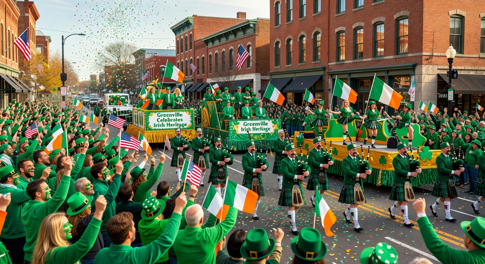
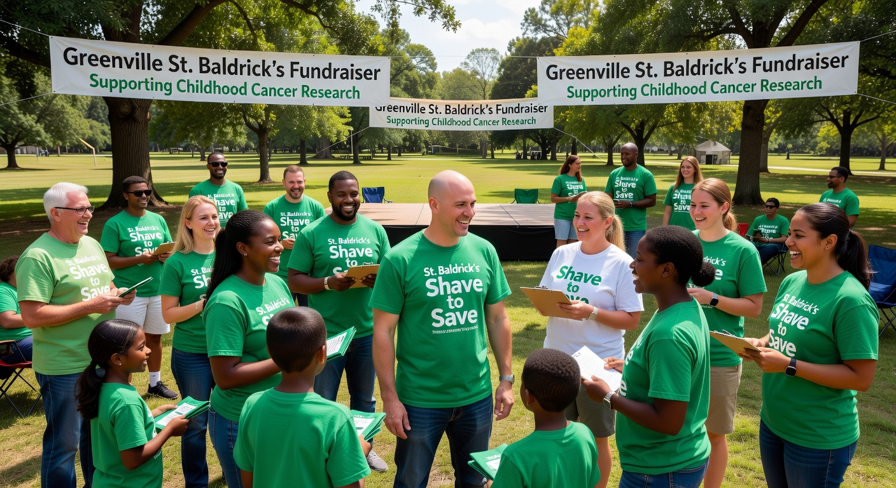
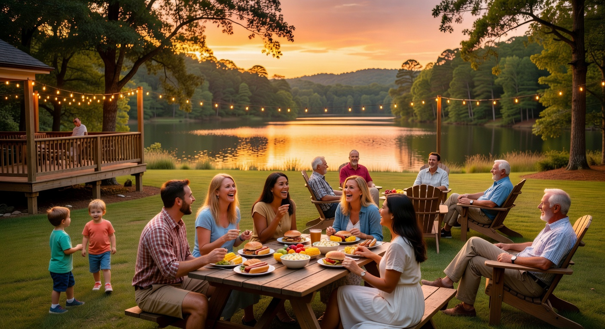

I’ve been blessed to build a life and career here in the Upstate. That comes with a responsibility to give back. My volunteer work isn’t something I do on the side — it’s core to who I am.

The same people who buy homes from me, who wave at me on Main Street, and who celebrate Irish heritage with me every March — those are the people I’m here to serve.
Whether it’s raising money for kids fighting cancer or putting on a parade that brings the whole city together, I show up because I care deeply about this place and these people.

These images represent the spirit of the events and causes I’m proud to support.
If you love the Upstate and want to get involved with Irish heritage events, St. Baldrick’s, or other local causes, I’d love to connect you with the right people.